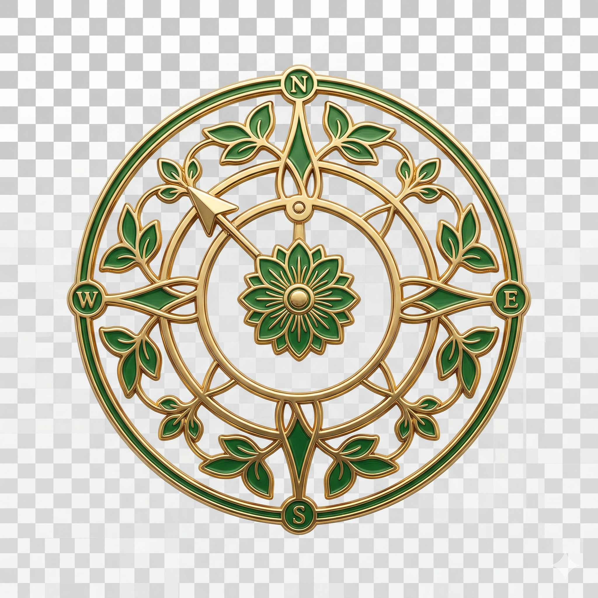
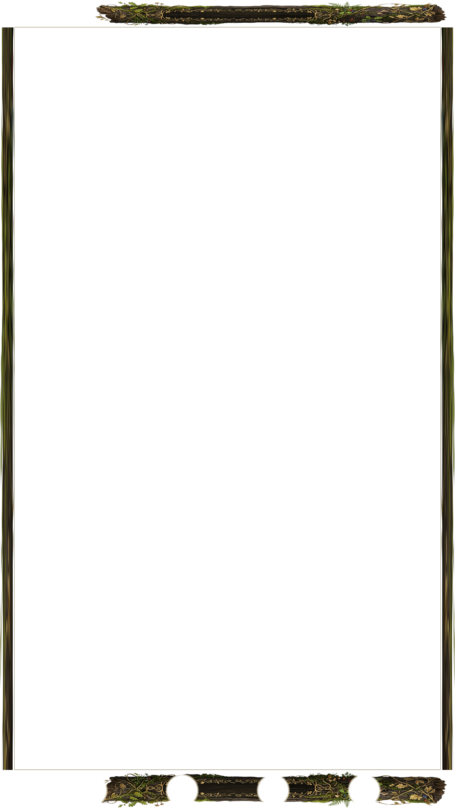
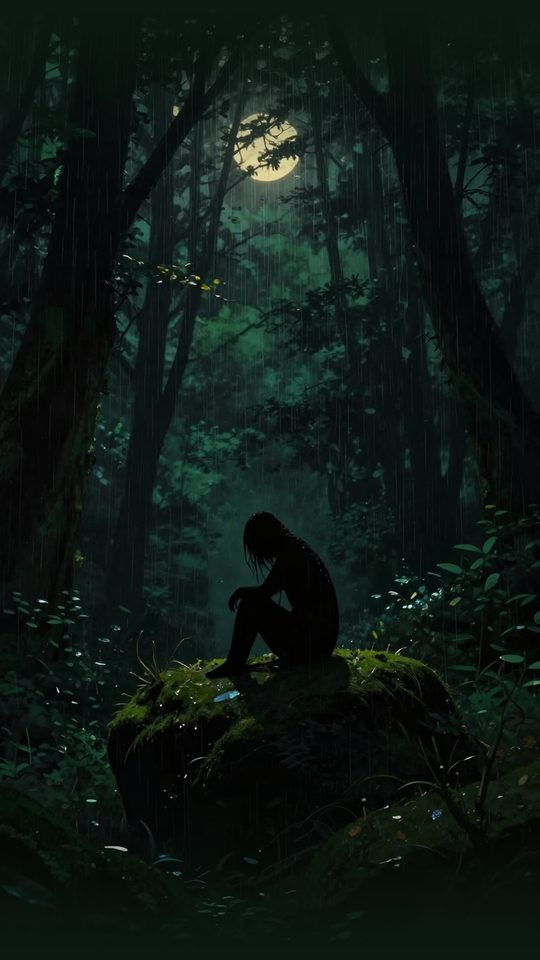
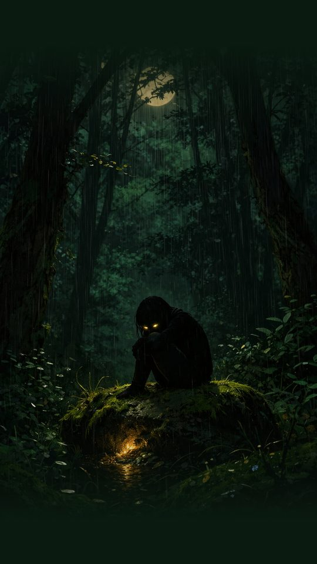
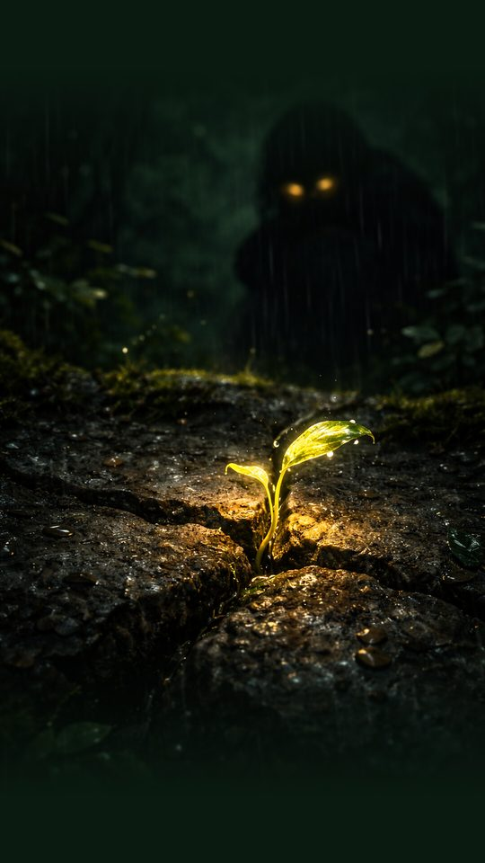

Deep focus achieved. Cultivate your real-world environment.
Peer-to-peer trading of Plants is coming in a future update. Each trade will carry a 1% marketplace fee, funding ongoing development and real-world seed grants.
Hash:
We're launching premium foil trading card prints — your Plant, physically pressed in metallic ink on card stock. Enter your email to get notified at launch.
Select two Plants to mix their DNA. The child inherits traits from both parents — rare traits are recessive and only pass under the right genetic conditions. Water your seed once per day for 3 days, then bloom it into your Greenhouse.
Spend your Dew Drops on cosmetics. Flex on your collection.
Unlock badges by reaching milestones. Each grants +25 Dew Drops.
Your Plants act as your digital loyalty card. Grow your collection to unlock exclusive discounts from Lucid Winds partner brands.





Every time you find a pattern, your focus generates a unique Dew Drop — a one-of-a-kind code. We use this to grow a mathematically unique, 1-of-1 digital plant.
Save your Dew Drops to unlock app upgrades, cosmetics, and soon — exclusive real-world rewards and discounts from partner brands.
Your 0 Plants are stored in temporary browser memory. Clearing your cache or switching browsers will erase your entire collection permanently.
Add Lucid Winds to your Home Screen to secure your collection and unlock the full Grow Log.